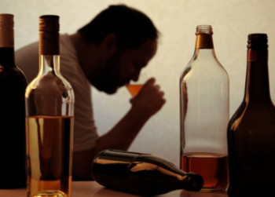

Как алкоголь влияет на здоровье человека
Содержание:
- Общие сведения
- Влияние алкоголя на сердечно-сосудистую систему человека
- Воздействие спиртных напитков на печень
- Этанол и центральная нервная система
- Вред алкоголя для мочеполовой системы человека
- Влияние алкоголя на пищеварительную систему
- Влияние алкоголя на смертность
По данным ВОЗ употребление 8 литров чистого спирта в год ведет к деградации нации. В РФ потребляется 10 литров в год. При этом за последние 10 лет данный показатель значительно снизился. Более 30 % россиян, регулярно употребляют крепкие спиртные напитки и страдают от хронического алкоголизма. По статистике от алкоголя в РФ в год умирает более 400 тысяч человек. У 3% процентов регулярно пьющих людей диагностированы расстройства психики.
Общие сведения
Систематическое употребление крепких спиртных напитков отрицательно влияет на общее состояние здоровья человека. Даже незначительные дозы спиртных напитков значительно сокращают продолжительность жизни. Под влиянием алкогольных токсинов накапливающихся в организме страдает центральная нервная система, снижается умственная и физическая активность.
По мере прогрессирования зависимости появляются необратимые поражения печени, органа перерабатывающего поступающий в организм этанол. Ткани печени замещаются соединительными, развиваются цирроз, жировой гепатоз. Алкогольные токсины затрудняют работу сердечно-сосудистой системы, провоцируя инфаркты и инсульты. Значительно снижается функция иммунной системы. Повышается вероятность развития онкологических болезней. Поражения центральной нервной системы под действие продуктов распада алкоголя ведут к изменениям психического состояния человека, заметно снижаются когнитивные способности и память, ослабевают рефлексы. У большинства алкоголиков выявляются признаки деградации личности, различные поведенческие нарушения. В моменты обострения абстиненции они становятся опасными не только для себя, но и для окружающих.
В периоды сильного опьянения и абстиненции алкоголики совершают различные противоправные поступки и попытки самоубийства. На фоне систематического пьянства обостряются хронические болезни.
Влияние алкоголя на сердечно-сосудистую систему человека
Люди, систематически употребляющие спиртные напитки в большей мере подвержены развитию таких заболеваний как: артериальная гипертензия, инсульт, ишемическая болезнь сердца, сердечная недостаточность, различные виды энцефалопатии и других. Это связано с разрушительным воздействием продуктов распада этанола на клетки миокарда. На сердечной мышце формируются рубцовые изменения, что в значительной мере снижает ее эластичность. Этиловый спирт меняет состав крови, разрушая эритроцитарные мембраны, что ведет к образованию тромбов. Из-за этого происходит блокировка сосудов и недостаточное снабжение органов и тканей кислородом. Среди населения бытует мнение, что алкоголь в незначительных дозах полезен для сердца. Но кардиологи всего мира опровергают это, не существует полезных доз спиртного. Злоупотребление или даже умеренное употребление алкоголя ведут к риску развития заболеваний сердца.
Воздействие спиртных напитков на печень
На функции печени возлагается основная нагрузка по переработке и обезвреживанию, поступающего в организм человека алкоголя. Относительно без последствий орган в состоянии переработать 40 г спирта для мужчин в сутки, и 20 г для женщин. Большие дозы алкоголя вызывают быструю алкогольную интоксикацию и постепенно железа утрачивает функциональность.
Именно в печени вырабатываются ферменты перерабатывающие этанол. Первый из них алкогольдегидрогеназа, именно он запускает процесс расщепления этанола до ацетальдегида (ядовитого токсина способного вызвать тяжелые отравления организма). Для его нейтрализации клетками печени вырабатывается другой фермент — ацетальдегиддегидрогеназа. Именно он перерабатывает ацетальдегид в уксусную кислоту, а дальнейшем расщепляет ее на воду и углекислого газа. Но при перенагрузке (систематическом употреблении спиртных напитков) клетки печени не справляются и гибнут. Постепенно происходит замещение гепатоцитов соединительными и жировыми тканями, что значительно снижает функции печени. На первых этапах болезни печени развиваются без симптомов. Люди не обращают внимания на болевые ощущения в правом подреберье, слабость, отсутствие аппетита и отеки. Результатом становятся тяжелейшие поражения печени, такие как:
- жировая дистрофия (стеатоз), нарушение функции и структуры гепатоцитов под действием алкоголя, ведущее к увеличению размеров печени. На ранних стадиях достаточно прекратить употребление спиртных напитков и клетки печени восстановятся;
- стеатогепатит (алкогольный гепатит), под действие алкоголя клетки печени гибнут, нарушаются структура и функции органа. Встречается у 35% хронических алкоголиков;
- цирроз - фиброзные изменения тканей печени. В тканях органа формируются рубцы, фиброзная ткань разрастается. Орган уменьшается в размерах и перестает полноценно работать. Диагностируется у 20% употребляющих спиртные напитки.
Болезнь фактически неизлечима. Из-за нарушения кровообращения между органами цирроз способствует развитию и почечной недостаточности.
Этанол и центральная нервная система
Постепенно с прогрессированием поражения печени, ацетальдегид проникает во все органы человека. Под действием токсинов поражаются мозг и центральная нервная система. Каждая доза алкоголя вызывает отмирание нервных клеток. Часто спиртное начинают употреблять, для того чтобы сбросить нервное напряжение и расслабиться, но алкоголь вызывает быстрое привыкание. Кровь насыщается токсинами, которые пагубно действуют на нервную систему. Степень влияния алкоголя на ЦНС зависит от степени алкогольной зависимости.
У человека, находящегося в состоянии сильного алкогольного опьянения проявляются следующие признаки поражения ЦНС:
- нарушения мелкой моторики и координации движений;
- дезориентация в пространстве;
- спутанность сознания;
- провалы в памяти;
- заторможенность;
- атаксия.
При хроническом алкоголизме происходят необратимые поражения нервной системы:
- внутримозговые кровоизлияния, угрожающие жизни зависимого;
- поражения среднего отдела головного мозга и гипоталамуса;
- алкогольная полинейропатия;
- алкогольная энцефалопатия;
- алкогольная деменция(слабоумие).
В большинстве случаев процессы поражения центральной нервной системы необратимы. У алкоголиков заметно ухудшаются память, способность логически мыслить. Происходит стремительная деградация личности. Даже после прекращения употребления спиртных напитков полностью восстановить деятельность ЦНС невозможно. Помимо этого систематическое употребление алкоголя провоцирует психические расстройства и смерть зависимого в дальнейшем.
Вред алкоголя для мочеполовой системы человека
Нет ни одной системы в организме человека которая не страдала бы от негативного воздействия алкоголя. Из-за постоянной интоксикации экскреторная функция почек снижается. Это ведет к большему накоплению в организме продуктов распада алкоголя. Процессы связаны с воздействием токсинов на почечные ткани и нарушениями микроциркуляции.
Хронический алкоголизм провоцирует и инфекционное поражения мочевых путей и развитие пиелонефрита.
Систематическое употребление спиртных напитков вызывает нарушения половой и репродуктивной функций человеческого организма. Под воздействием алкогольных токсинов у 30% мужчин при хроническом алкоголизме развивается необратимая импотенция. У женщин, употребляющих алкоголь снижается функция яичников и развивается аменорея. Действие алкогольных токсинов ведет к изменениям генома, что повышает возможность рождения младенцев с аномалиями развития.
Злоупотребление алкогольными напитками отрицательно сказывается на мочеполовой системе и приводит быстрому старению организма.
Влияние алкоголя на пищеварительную систему
Алкоголь негативно воздействует на слизистые оболочки человеческих органов. Самый большой вред наносится желудочно-кишечному тракту, так как он принимает на себя первый удар. Всасывание этанола происходит через слизистые оболочки желудка и кишечника. Алкогольные напитки, имеющие крепость более 40० способны вызвать химический ожог слизистой оболочки. Раздражая стенки пищевода, желудка и кишечника алкоголь убивает не только болезнетворные, но и необходимые для деятельности организма полезные бактерии. Что снижает сопротивляемость различным инфекциям.
При систематическом действии алкоголя на ЖКТ наблюдаются следующие негативные последствия:
- нарушения моторики пищевода;
- воспалительные процессы;
- расширение вен и сосудов пищевода, что может вызвать внутреннее кровотечение;
- пониженное слюноотделение.
Алкоголь вызывает значительное повышение выработки желудочного сока и соляной кислоты, разъедающих стенки пищеварительных органов. Что провоцирует развитие язвы желудка, воспаления двенадцатиперстной кишки, нарушения в работе желчевыводящих путей и становится причиной онкологии ЖКТ. Попавший в организм алкоголь приводит к купированию кровеносных сосудов, мешая всасыванию витаминов и полезных веществ.
Накопившийся ацетальдегид оказывает пагубное, токсическое воздействие на кишечник. В нем начинают развиваться гнилостные процессы, усиливающие интоксикацию организма.
При хроническом алкоголизме также наносится непоправимый вред поджелудочной железе. Нарушения функций железы грозит развитием диабета и панкреатита.
Алкоголь наносит здоровью человека непоправимый вред. Систематическое употребления спиртных напитков влечет за собой деградацию личности и раннюю смерть.
Влияние алкоголя на смертность
Алкоголь значительно влияет на продолжительность жизни человека. По данным статистики каждая 20 смерть в мире связана с употреблением спиртных напитков. На фоне хронического алкоголизма происходит обострение хронических болезней, поражаются все жизненно важные органы и системы.
Под воздействие алкогольных токсинов и в периоды абстиненции человек способен совершать попытки самоубийства. Необдуманные поступки и несчастные случаи часто приводят к смерти зависимого.
Большое количество алкоголиков погибают при употреблении суррогатных спиртных напитков.
Злоупотребление алкоголем снижает продолжительность жизни человека.
Если своевременно не обратиться за специализированной помощью и не начать лечение алкогольной зависимости, то патологических изменений в организме избежать не удастся.
Только в условиях специализированной наркологической клиники есть возможность избавиться от зависимости и избежать преждевременной смерти.